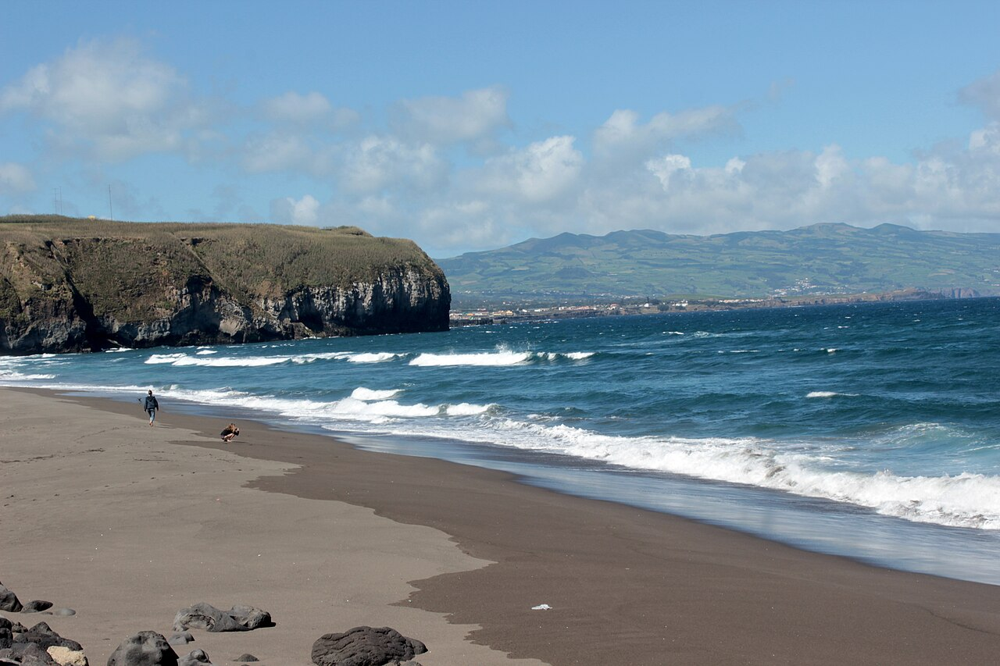

Santa Bárbara — Ribeira Grande
Açores, Portugal · surf, bodyboard, baignade

Une plage de sable volcanique sur la côte nord de São Miguel, ouverte à toutes les houles de l'Atlantique. Les Açores captent la houle avant l'Europe continentale.
- Lieu
- Açores, Portugal
- Niveau
- Intermédiaire
- Activités
- surf, bodyboard, baignade
- Type d'eau
- Mer / océan
- Coordonnées
- 37.83, -25.55 (position approximative du secteur)
Dangers à connaître
- Courants de retour marqués.
- Houle qui monte très vite, exposition totale.
- Eau autour de 18°C, vent frais.
Le conseil d'Ocean Buddy
Consulte la houle la veille : ici elle peut doubler de taille en une nuit.
Ouvrir dans Ocean Buddy Télécharger sur l'App Store
Source : Description historique Ocean Buddy · vérification externe en attente.